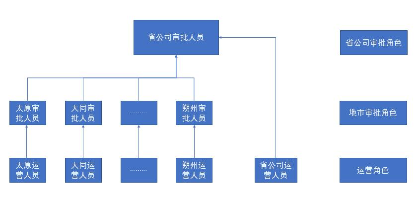
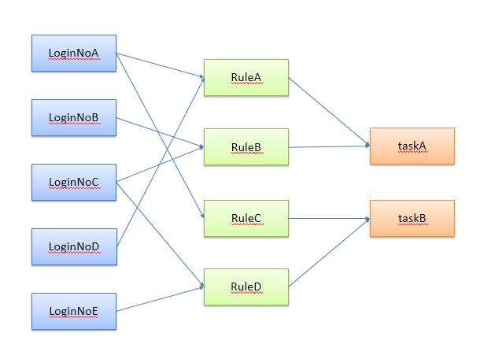
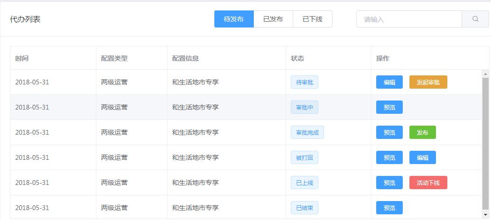
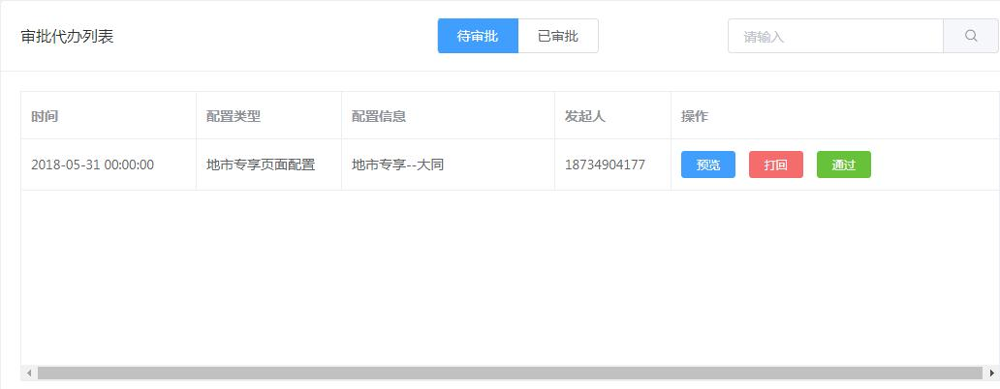
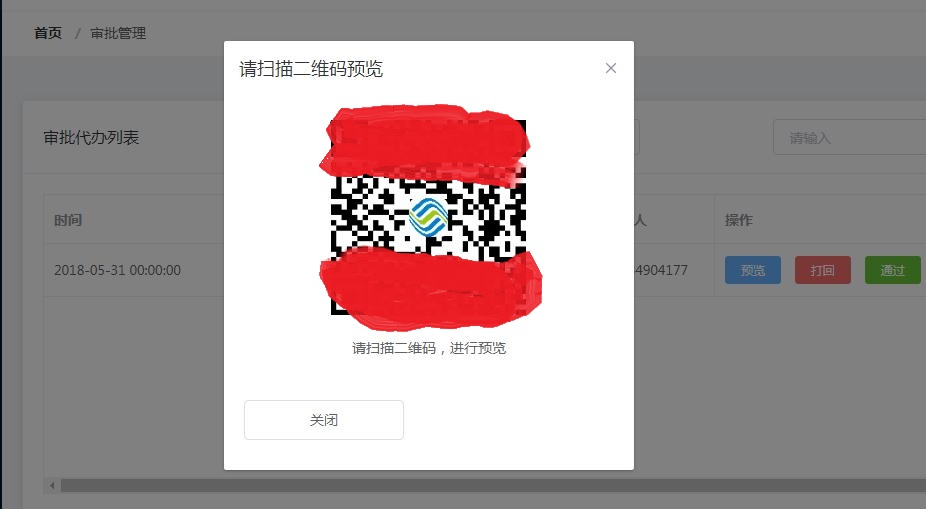
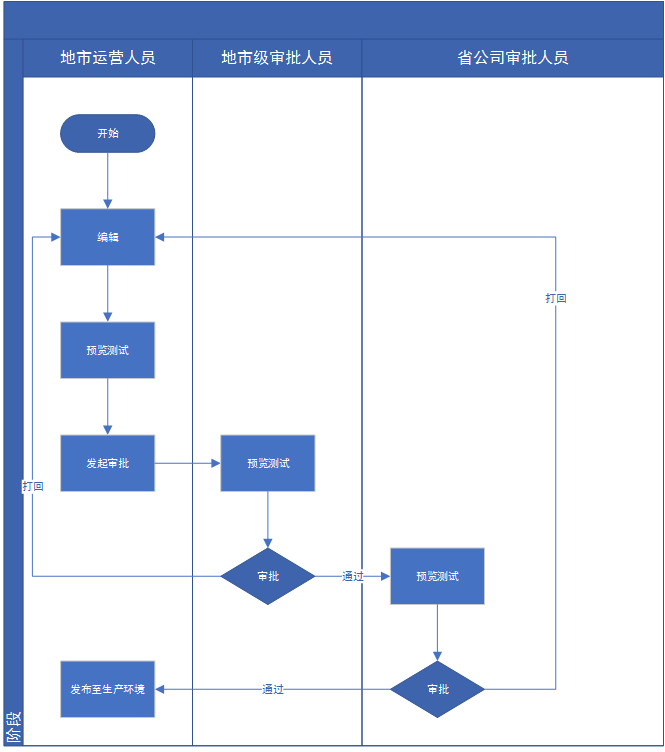
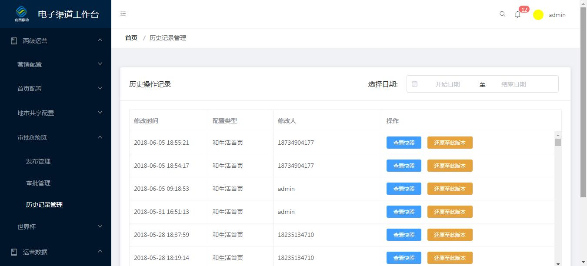
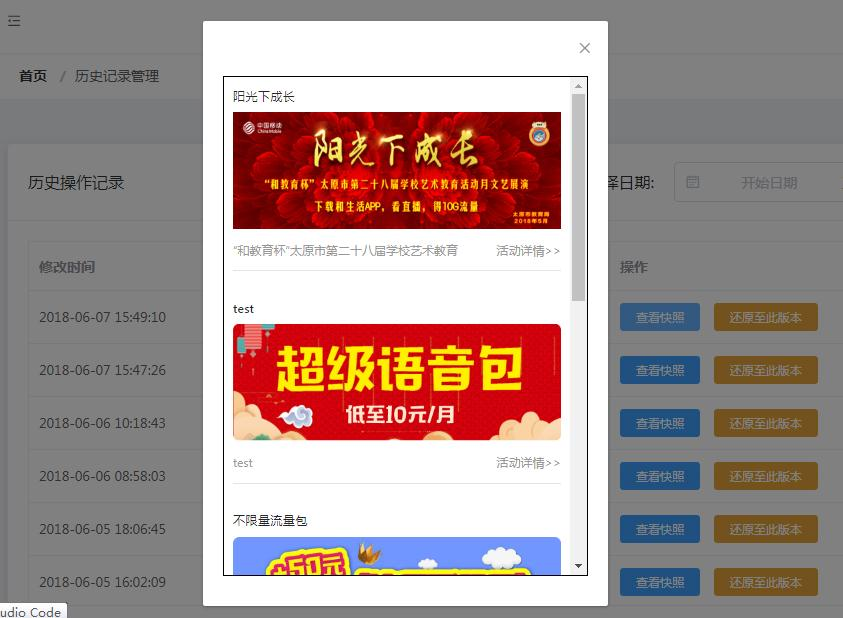
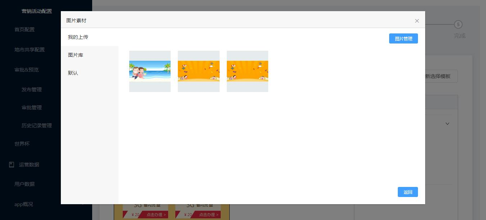

可视化编辑系统实践
这篇我想写写可视化编辑系统的实践，重点在数据模型，静态化，工作流，预览等一系列系统功能的实践上，具体的可视化编辑功能，将另开一贴来介绍；
背景
前端工程中，有一些页面涉及运营位，根据市场的变化以及运营的要求，需要频繁的更迭，开发人员需要频繁的修改上线；由于生产环境的安全限制，手动上线费时费力，还需要走更多的流程（打申请，写文档，等审批），占用了大量的时间确不能产生多少价值；
CMS
传统的解决方案就是采用内容管理平台，运营人员通过CMS来修改，发布内容，包括文字，图片，表格等等一切想要发布的信息；CMS系统把数据和模板结合起来，静态化生成HTML页面或代码块，通过ftp协议上传到前端应用中，供项目使用；
CMS解决了2个问题： 1、没有技术门槛，运营人员可通过界面操作来修改运营位内容； 2、不需要手动上线，ftp一键上传；也省去了复杂的上线流程；
使用CMS系统，解放了开发人员一部分时间，迭代效率提升不少；
CMS系统已经向前迈了一大步，但仍存在不少问题： 1. 比较笨重，有一定的门槛，需要有一个熟练的操作人员； 2. CMS一般有复杂的数据结构，需要把每一个图片，文字都对应到一个数据库字段中；维护相对困难； 3. 有一些抽象概念（栏目、内容…）；推广困难（用户有意向主动使用，但培训了多次，效果不佳，一直没有交出去） 4. 模板复用率低，一旦有结构型的变化，需要开发人员修改模板；
设计思路
最初的想法是复用CMS的数据结构，静态化的部分也可以复用；但这么做需要先把CMS的数据模型梳理出来，并且CMS本身不是前后端分离的架构，接口层需要重新开发；这样rest层需要针对不同的前端场景提供各种接口，多表关联的处理太多，rest层的开发将会非常复杂；还有，本次可视化的要求除了，编辑文字图片外，还要有“楼层”（首页的瀑布式结构）的处理（增加，删除，排序）甚至有“楼中楼”的情况，CMS的数据模型难以表达出楼层概念；
如果把每一个页面元素都和数据库对应起来的话，整个系统会显得非常笨重，耦合度非常高，难以扩展，前端和后端的都不灵活；因此我们考虑，数据库只存储必要的信息，不记录所有的前端元素，只记录编辑完成的结果；
前端编辑过程不和后端交互，编辑结束后，将最终的html代码段存储在数据库中，后端根据代码段来静态化生成页面，这样编辑的过程完全有前端工程去处理，这样更灵活也更轻量；
但是这样做有一个难点：当下一次来编辑时，需要依据html代码块还原成可编辑的模板；之前保存在数据库中的是html代码的字符串，要把它还原成可编辑的模板，非常麻烦；
为此，我们将可编辑的数据以一个json对象的形式存储在数据库中，下一次编辑时，前端通过json数据，结合VUE组件，渲染出可编辑界面；
具体的过程如下：
- 管理员访问后台编辑系统时，首先从数据库中查询出默认的json串，这个json串是初始化系统时录入的；前端根据json串，还原出可编辑界面；
- 管理员操作可编辑界面，前端记录修改，在保存时，把json串和html代码块一起存储在数据库中；
- 后端根据html代码块生成页面，并推送到前端工程使用；
- 管理员再次访问后台系统时，可根据json串，结合封装好的vue组件，把可编辑界面还原出来；（这个组件还用来实现了历史版本快照的功能）
除了记录一些页面的固有信息，只存储json数据和html代码块，json用作还原可视化编辑界面，html代码块用来静态化生成页面；
数据模型：
id 主键 ,
name 生成页名称 ,
area_code 地市 ,
type 类型 1:首页 2:地市专项 ,
json json数据 ,
code html代码块 ,
create_time 创建时间 ,
update_time 更新时间 ,
update_login_no 更新操作工号 ,
status 状态(0：编辑完成，1：审批中，2：审批完成，-1：被打回，9：生效，-9：失效) ,
channels 发布渠道 ,
access_url 静态化页面路径,
remark1 备用字段1 ,
remark2 备用字段2 ,工作流
根据用户的要求，可视化操作需要有审批流程，具体的审批流程是： 1、地市发布人员–地市审批人员–省公司审批人员 2、省公司发布人员–省公司审批人员 并且，不同地市间，审批人员和发布人员不能交叉： 
工作流系统采用，Activity工作流系统
流程相对简单，只有2级审批：
- 工作流角色定义四个角色，地市发布人员，地市审批人员，省公司审批人员和省公司审批人员；不同地市按照工号的归属地区来判定；这样，不同地市运营人员虽然同属一个角色，但依然可以做到审批流程不交叉；
- 工作流流转采用指定下一步审批人的方式，找到当前工号的角色在工作流中下一步角色的工号列表；
- 审批结束后，由最初的编辑人员执行发布；打回操作同样是直接打回到最初的发布人员；
在实际对接工作流时，比预期要复杂，出现了各种问题：
- 实际场景中，还有另一个工作流（首页发布），只是完成地市发布，地市审批这样一个非常简单的工作流；但是这两个工作流对应的角色是重叠的，但是工号却不是，那么当选择下一步审批人时，就会出现两个工作流所有的审批人员，这显然是不合理的。
- 部分VIP工号要求既有发布权限，又有审批权限，当一个工号存在于同一审批流程中的多个角色中时，在工作流中如何确定他是发布角色，还是审批角色？下一步审批人又怎么查询呢
- 地市是按照工号的归属区域来区分的，并且由于还要和营销OP对接，工号的归属区域必须是唯一的，那么当同一工号要管理多个地市时，会出现不可避免的冲突；
情况1相对简单，在角色设置时，不同工作流的角色应该是不同的，工号可以在不同角色中，而角色必须属于唯一的工作流，角色重叠本身是不合理的；

情况2稍微复杂些，为了解决这个情况，我们增加了一张数据关联表，用来管理角色之间的关系，以及角色和工作流的之间的关系；
情况3，其实解决问题不难，只要按照不同地市来建立角色即可；但是这样的话，我们会有11个地市发布角色，11个地市审批角色，再加上另一个工作流角色不能重叠，那么我们需要配置44个角色来满足一个2级审批的简单工作流，维护成本颇高；实际使用场景中，这样情况很少，只是及其特殊的情况；用户方面也没有明确的场景支撑，只是提出这样一个想法；经过内部讨论我们决定，暂不处理这样场景，即使后续出现这样的情况，也可以通过分配多个工号处理；避免投入过多的精力去解决没有多大价值的需求点；
前端的设计
前端跟工作流相关的有两个模块，一个是发布管理，一个是审批管理
发布管理包含6个状态，
1、待审批（完成可视化编辑，但未点击“发起审批”，此状态时仍可以修改配置信息）
2、审批中（即等待审批的配置信息，提供审批提醒功能）
3、被打回 审批不通过的配置信息）
4、审批完成（审批通过的配置信息，运营人员可点击“发布”按钮，正式发布）
5、已上线（审批通过后，在待发布列表点击发布按钮后，状态变更为已上线）
6、已结束（到达活动结束时间或者手动点击“结束活动”的配置信息。此状态下提供“下线”按钮）
对应在数据库的state 0：编辑完成（待审批），1：审批中，2：审批完成，-1：被打回，9：生效（已上线），-9：失效（已结束）
不同的status，对应着不同的操作，这里是由前端自己来管理，如下图： 
审批管理：
只有在状态为1（审批中）时，这条记录会出现在审批管理中； 审批管理提供，预览、打回、通过三个状态，如下图： 
可以看到，审批管理和发布管理涉及的可操作按钮有：预览，编辑，发起审批，打回，通过，发布，活动下线
除了预览和编辑，其它操作都会改变status；
预览
可视化编辑后，操作人员如何确认自己修改是否生效？审批人员依据什么来确认发布人员的操作是否正确？预览的功能必不可少；
一般预览的思路是静态化后打开页面查看效果，但是本次可视化系统，编辑后并非完整的页面，只是一段代码块，那么预览就必须要依赖于前端工程；为了预览重新搭建一个前端工程显然不值得，那么灰度环境是个非常好的选择；
但是前端工程是根据手机号来进行灰度的，如果发布人员和审批人员的手机号不在配置列表中，就无法访问灰度环境；
因此，在灰度管理平台中增加了一个默认的号码，当cookie中存在该号码时，将被代理至灰度环境；
二维码
预览链接通过二维码的方式显示出来，发布人员和审批人员只需要扫描二维码即可预览编辑后的界面； 审批管理中的预览： 
保存成功后，同样会弹出二维码，提示预览测试：
有了预览功能，整个工作流就可以形成完整的闭环； 
还有一种预览，需要依赖登录，为此前端提供输入手机号再生成二维码进行预览的方式，前端工程需要配合改造，实现免密登录的能力：
涉及手机号等相关敏感参数的传递，需要考虑安全性：
- 二维码链接经过des加密处理，其中包含（手机号、默认渠道、以及活动ID等敏感信息）即使后台链接被泄露，也加密信息也不会轻易被修改；
- 灰度的cookie增加实效性（10分钟）；通常扫描二维码后，前端工程会增加灰度cookie并跳转至活动界面，10分钟后，cookie失效，刷新界面预览失效；
历史版本管理
前面介绍了将可视化编辑数据按照json串的格式存储于数据库中的设计，同时我们还增加了一张历史表，当编辑结束保存时，接口层会把原来的json数据存入历史表中，然后再把编辑后的json数据update到原表中，这样，每次保存，都会记录下上一次的数据；借助历史表中的数据，我们可以轻易的获取到历史版本中改了哪些内容；

快照&版本回滚
为了便于管理员查看，增加了”快照”功能，实际就是将历史表中的json数据，取出来，还原成界面；弹框展示给管理员查看，同时提供了将版本回滚的能力，便于在出现紧急情况下回退；
由于历史表中也存储的是json串，借助前面开发的编辑界面组件，可以很轻易的还原出历史版本的界面 
版本回滚同样需要经过审批流程，因为发起回滚的角色和发布角色相同，这里复用了发布流程的工作流
图片资源管理
在营销活动的可视化编辑中，图片可以上传也可以选择已经上传好的，因此需要图片管理功能；
图片分了几个维度： 1、分公共图片库，以及地市图片库，地市运营人员可以使用本地市图片库，以及公共图片库；但不能使用其它地市图片库；省公司运营只维护公共图片库； 2、按照可视化控件分类，轮播图控件，背景控件的图片功能不同在选择时不能交叉； 3、按照图片比例管理，即使是同一种控件，有时图片尺寸比例也不相同；在选择时也需要按照比例来控制；
图片资源记录表：
material_id 素材ID,
area_code 地区编码,
material_url 素材路径,
control_id 控件ID,
ratio 长宽比,
remark1 备用字段1,
remark2 备用字段2,图片查询接口根据图片管理的场景获取到满足要求的图片列表，并根据记录表中的素材路径展示出来；
保存图片的目录结构，按照：公共库/归属地/日期/图片 的结构来存储；

图片服务器 & rsync
可视化编辑后台系统需要解决另一个问题是图片同步的问题；传统CMS图片需要手动执行FTP同步，并且需要指定推送目录；
在这次的实践中，采用FTP并不合适，主动操作比较繁琐，并且FTP也有一定的延迟（本次项目要求保存后立刻就要预览）；因此我们选择使用rsync协议把上传的图片同步至图片服务器中；
rsync的特性
- 可以镜像保存整个目录树和文件系统。
- 可以很容易做到保持原来文件的权限、时间、软硬链接等等。
- 无须特殊权限即可安装。
- 快速：第一次同步时 rsync 会复制全部内容，但在下一次只传输修改过的文件。rsync在传输数据的过程中可以实行压缩及解压缩操作，因此可以使用更少的带宽。
- 安全：可以使用scp、ssh等方式来传输文件，当然也可以通过直接的socket连接。
- 支持匿名传输，以方便进行网站镜象
静态化&FTP推送
静态化前面说过了，后端直接从数据库中取出前端编辑好的代码片段，静态化成html文件，然后通过ftp主动推送到前台工程中使用：
完整的流程如下：
总结
- 采用json+html代码段的存储结构，将可视化编辑与后台数据实现解耦，大大简化了后台的开发；
- 接入工作流系统，完善审批流程，简化了上线流程；
- 借助灰度发布，实现实时预览，解决了上线可靠性问题；
- 实现历史版本快照和回退功能，完善了紧急情况的处理方案；
- 引入图片服务器，解决了图片管理的问题；
- rsync同步工具，解决FTP推送延迟问题；
- 还有上一篇介绍的后台系统的权限管理；